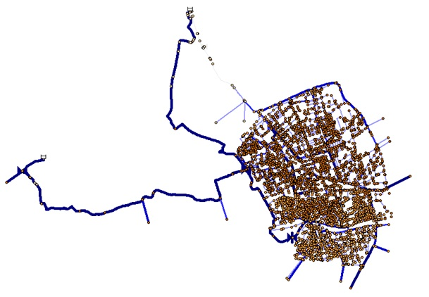
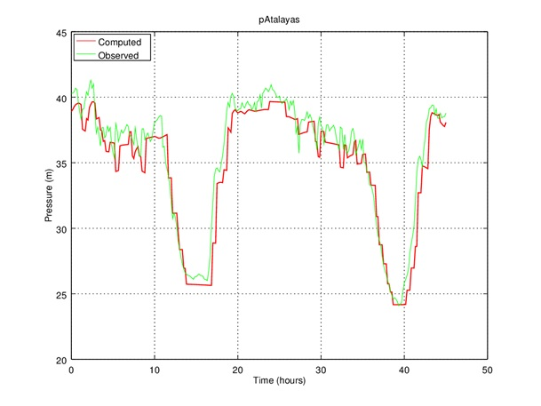

Evaluating energy recovery potential in Murcia’s water supply system, Spain
I have a pleasure to participate in the research project at University of Technology in Cartagena (UPCT) titled "Modelling and evaluating energy recovery potential in Murcia’s water supply system piping of Murcia".
Background:
Murcia is the 7th most populated city in Spain. Its water supply system is extensively monitored through a large number of pressure gauges and flow meters. Murcia’s water supply network is fed from distribution reservoirs at enough elevation to avoid needing pumping stations for most of the city districts.
My role:
Hydraulic resources have been evaluated throughout the water supply system. District Metered Areas (DMA) inlets have been evaluated.
A detailed model of the water supply network has been implemented in EPANET parting from a GIS model.

EPANET Model of Murcia water supply system
The first step of the evaluation has consisted in the optimizing and validation of the model. Initially, the model was reviewed by comparing pressure and flow rate measurements in the main pipes. Then, an extensive experimental campaign was designed. In that campaign valves were switched so that each day a set of District Metered Areas (DMA) have just one metered inlet or at the most a very short number of metered inlets, whereas having a set of pressure measurements within the DMA. The obtained data was used to minimize errors in pressure time series, optimising roughness of the main pipes.

Example of a calibrated and observed pressure at an gauge of studied zone
Then, the hydraulic potential at the DMAs inlets has been evaluated by tracking the “instantaneous” minimum pressure and head within each DMA, as well as the flow rate entering the DMA. So that, the maximum head and the range of flow rates is established for the turbine.
Outcome:
At the moment, once that all of these potentials have been assessed, a turbine prototype is being designed.